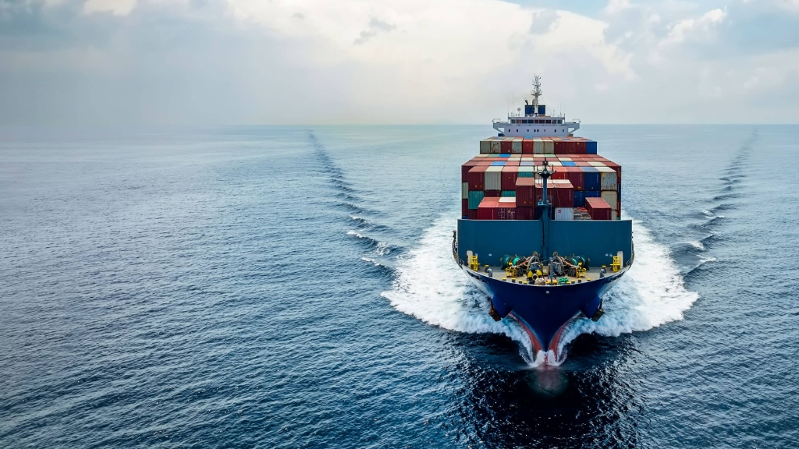

Maritime shipping companies burn massive amounts of fuel, driving up costs and carbon emissions. QFlow uses quantum-inspired mathematics to predict fuel burn and dynamically optimize cargo routes, speeds, vessel types, and alternative clean fuels like green hydrogen or methanol.
Bridging classical maritime navigation and quantum-inspired surrogate optimization to eliminate bunker fuel waste across global shipping corridors.
Live hydrodynamic sensor feeds and satellite AIS combine with quantum QUBO solvers to re-optimize headings, throttle speeds, and fuel mixes every 15 minutes.

Our surrogate machine learning models ingest real-time wave height, wind drag, and ocean currents to dynamically compute fuel burn curves across 12,000+ corridor permutations simultaneously.
Calculates dynamic hull resistance based on container weight distribution, ballast water trim, and ISO 19030 propeller efficiency metrics.
Maritime shipping companies burn massive amounts of fuel, driving up costs and carbon emissions.
This platform uses quantum-inspired mathematics to predict fuel burn and dynamically optimize cargo routes, speeds, vessel types, and alternative clean fuels like green hydrogen or methanol — in real-time, even at sea.
Traditional logistics route planning fails to handle the multi-variable complexity of combining alternative energy sources, vessel capacities, dynamic weather currents, and stringent international emission limits simultaneously.
Interactive "What-If" simulator letting operators instantly test LNG vs. Green Ammonia vs. Shore Power vs. Methanol cost & emission impacts.
Live simulator reacting to synthetic storm alerts, recalculating routes and carbon penalties — even with intermittent satellite connectivity at sea.
Watch Classical Genetic Algorithm convergence race against the Quantum-Inspired optimizer live — see the efficiency delta in real-time.
ML models (XGBoost + Neural Networks) trained on vessel telemetry, predicting fuel consumption with low RMSE/MAE across varying cargo loads.
Comprehensive lifecycle carbon accounting helping sustainability officers meet international compliance standards with downloadable PDF reports.
Mapbox GL JS-powered maritime route visualization with real-time telemetry overlays, vessel tracking, and scenario comparison panels.
Handle hundreds of simultaneous variables without excessive computation time.
Balance cost minimization vs. carbon reduction vs. strict delivery deadlines simultaneously.
Operate reliably even with intermittent satellite/cellular connectivity mid-voyage.
RMSE / MAE on fuel consumption estimates across real vessel scenarios.
Convergence time compared to classical genetic algorithms under same conditions.
Total lifecycle carbon emission reduction percentage across full voyages.
Ease of scenario comparison for logistics operators — clarity & usability score.
Join the QFlow mission — zero carbon emissions, smarter routes, cleaner seas. Built for SIH 2026 by Egreen Quanta.